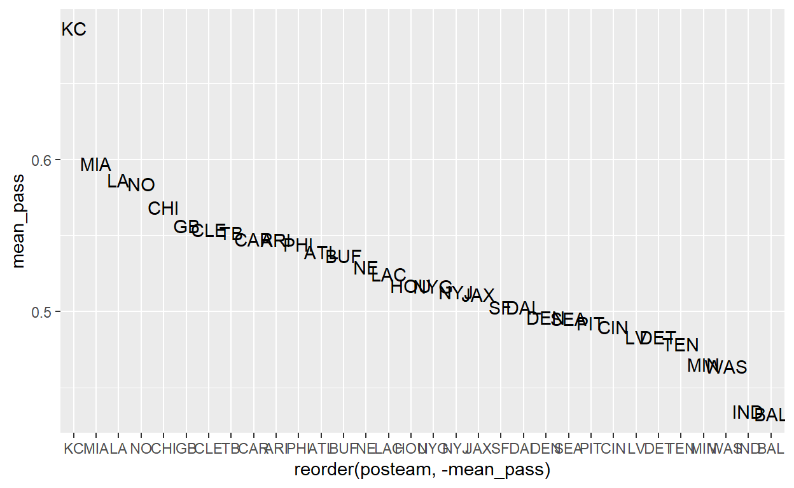

The following guide will assume you have R installed. I also highly recommend working in RStudio. If you need help getting those installed or are unfamiliar with how RStudio is laid out, please see this section of Lee Sharpe’s guide.
A quick word if you’re new to programming: all of this is happening in R. Obviously, you need to install R on your computer to do any of this. Make sure you save what you’re doing in a script (in RStudio, File –> New File –> R script) so you can save your work and run multiple lines of code at once. To run code from a script, highlight what you want, and press control + enter or press the Run button in the top of the editor (see Lee’s guide). If you don’t highlight anything and press control + enter, the currently selected line will run. As you go through your R journey, you might get stuck and have to google a bunch of things, but that’s totally okay and normal. That’s how I got started!
First, you need to install the magic packages. You only need to run this step once on a given computer. For these you can just type them into the RStudio console (look for the Console pane in RStudio) directly since you’re never going to be doing this again.
install.packages("tidyverse")
install.packages("ggrepel")
install.packages("ggimage")
#needed to install `nflfastR`
install.packages("devtools")
devtools::install_github("mrcaseb/nflfastR")Okay, now here’s the stuff you’re going to want to start putting into your R script. The following loads tidyverse, which contains a lot of helper functions for working with data, and ggrepel and ggimage for making figures, along with nflfastR.
library(tidyverse)
library(ggrepel)
library(ggimage)
library(nflfastR)This one is optional but makes R prefer not to display numbers in scientific notation, which I find very annoying:
options(scipen = 9999)This will load the full play by play for the 2019 season (including playoffs). We’ll get to how to get more seasons later. Note that this is not actually using the nflfastR package, but downloading pre-cleaned data from its data repository, which is much faster.
data <- readRDS(url('https://raw.githubusercontent.com/guga31bb/nflfastR-data/master/data/play_by_play_2019.rds'))Before moving forward, here are a few ways to get a sense of what’s in a dataframe. We can check the dimensions of the data, and this tells us that there are 48,034 rows (i.e., plays) in the data and 322 columns (variables):
dim(data)
#> [1] 48034 322str displays the structure of the dataframe:
str(data[1:10])
#> tibble [48,034 x 10] (S3: tbl_df/tbl/data.frame)
#> $ play_id : num [1:48034] 1 36 51 79 100 121 148 185 214 239 ...
#> $ game_id : chr [1:48034] "2019_01_ATL_MIN" "2019_01_ATL_MIN" "2019_01_ATL_MIN" "2019_01_ATL_MIN" ...
#> $ home_team : chr [1:48034] "MIN" "MIN" "MIN" "MIN" ...
#> $ away_team : chr [1:48034] "ATL" "ATL" "ATL" "ATL" ...
#> $ season_type : chr [1:48034] "REG" "REG" "REG" "REG" ...
#> $ week : int [1:48034] 1 1 1 1 1 1 1 1 1 1 ...
#> $ posteam : chr [1:48034] NA "ATL" "ATL" "ATL" ...
#> $ posteam_type : chr [1:48034] NA "away" "away" "away" ...
#> $ defteam : chr [1:48034] NA "MIN" "MIN" "MIN" ...
#> $ side_of_field: chr [1:48034] NA "MIN" "ATL" "ATL" ...In the above, I’ve added in the [1:10], which selects only the first 10 columns, otherwise the list is extremely long (remember from above that there are 322 columns!).
Another very useful command is to get the names of the variables in the data:
names(data)
#> [1] "play_id"
#> [2] "game_id"
#> [3] "home_team"
#> [4] "away_team"
#> [5] "season_type"
#> [6] "week"
#> [7] "posteam"
#> [8] "posteam_type"
#> [9] "defteam"
#> [10] "side_of_field"
#> [11] "yardline_100"
#> [12] "game_date"
#> [13] "quarter_seconds_remaining"
#> [14] "half_seconds_remaining"
#> [15] "game_seconds_remaining"
#> [16] "game_half"
#> [17] "quarter_end"
#> [18] "drive"
#> [19] "sp"
#> [20] "qtr"
#> [21] "down"
#> [22] "goal_to_go"
#> [23] "time"
#> [24] "yrdln"
#> [25] "ydstogo"
#> [26] "ydsnet"
#> [27] "desc"
#> [28] "play_type"
#> [29] "yards_gained"
#> [30] "shotgun"
#> [31] "no_huddle"
#> [32] "qb_dropback"
#> [33] "qb_kneel"
#> [34] "qb_spike"
#> [35] "qb_scramble"
#> [36] "pass_length"
#> [37] "pass_location"
#> [38] "air_yards"
#> [39] "yards_after_catch"
#> [40] "run_location"
#> [41] "run_gap"
#> [42] "field_goal_result"
#> [43] "kick_distance"
#> [44] "extra_point_result"
#> [45] "two_point_conv_result"
#> [46] "home_timeouts_remaining"
#> [47] "away_timeouts_remaining"
#> [48] "timeout"
#> [49] "timeout_team"
#> [50] "td_team"
#> [51] "posteam_timeouts_remaining"
#> [52] "defteam_timeouts_remaining"
#> [53] "total_home_score"
#> [54] "total_away_score"
#> [55] "posteam_score"
#> [56] "defteam_score"
#> [57] "score_differential"
#> [58] "posteam_score_post"
#> [59] "defteam_score_post"
#> [60] "score_differential_post"
#> [61] "no_score_prob"
#> [62] "opp_fg_prob"
#> [63] "opp_safety_prob"
#> [64] "opp_td_prob"
#> [65] "fg_prob"
#> [66] "safety_prob"
#> [67] "td_prob"
#> [68] "extra_point_prob"
#> [69] "two_point_conversion_prob"
#> [70] "ep"
#> [71] "epa"
#> [72] "total_home_epa"
#> [73] "total_away_epa"
#> [74] "total_home_rush_epa"
#> [75] "total_away_rush_epa"
#> [76] "total_home_pass_epa"
#> [77] "total_away_pass_epa"
#> [78] "air_epa"
#> [79] "yac_epa"
#> [80] "comp_air_epa"
#> [81] "comp_yac_epa"
#> [82] "total_home_comp_air_epa"
#> [83] "total_away_comp_air_epa"
#> [84] "total_home_comp_yac_epa"
#> [85] "total_away_comp_yac_epa"
#> [86] "total_home_raw_air_epa"
#> [87] "total_away_raw_air_epa"
#> [88] "total_home_raw_yac_epa"
#> [89] "total_away_raw_yac_epa"
#> [90] "wp"
#> [91] "def_wp"
#> [92] "home_wp"
#> [93] "away_wp"
#> [94] "wpa"
#> [95] "home_wp_post"
#> [96] "away_wp_post"
#> [97] "vegas_wp"
#> [98] "vegas_home_wp"
#> [99] "total_home_rush_wpa"
#> [100] "total_away_rush_wpa"
#> [101] "total_home_pass_wpa"
#> [102] "total_away_pass_wpa"
#> [103] "air_wpa"
#> [104] "yac_wpa"
#> [105] "comp_air_wpa"
#> [106] "comp_yac_wpa"
#> [107] "total_home_comp_air_wpa"
#> [108] "total_away_comp_air_wpa"
#> [109] "total_home_comp_yac_wpa"
#> [110] "total_away_comp_yac_wpa"
#> [111] "total_home_raw_air_wpa"
#> [112] "total_away_raw_air_wpa"
#> [113] "total_home_raw_yac_wpa"
#> [114] "total_away_raw_yac_wpa"
#> [115] "punt_blocked"
#> [116] "first_down_rush"
#> [117] "first_down_pass"
#> [118] "first_down_penalty"
#> [119] "third_down_converted"
#> [120] "third_down_failed"
#> [121] "fourth_down_converted"
#> [122] "fourth_down_failed"
#> [123] "incomplete_pass"
#> [124] "touchback"
#> [125] "interception"
#> [126] "punt_inside_twenty"
#> [127] "punt_in_endzone"
#> [128] "punt_out_of_bounds"
#> [129] "punt_downed"
#> [130] "punt_fair_catch"
#> [131] "kickoff_inside_twenty"
#> [132] "kickoff_in_endzone"
#> [133] "kickoff_out_of_bounds"
#> [134] "kickoff_downed"
#> [135] "kickoff_fair_catch"
#> [136] "fumble_forced"
#> [137] "fumble_not_forced"
#> [138] "fumble_out_of_bounds"
#> [139] "solo_tackle"
#> [140] "safety"
#> [141] "penalty"
#> [142] "tackled_for_loss"
#> [143] "fumble_lost"
#> [144] "own_kickoff_recovery"
#> [145] "own_kickoff_recovery_td"
#> [146] "qb_hit"
#> [147] "rush_attempt"
#> [148] "pass_attempt"
#> [149] "sack"
#> [150] "touchdown"
#> [151] "pass_touchdown"
#> [152] "rush_touchdown"
#> [153] "return_touchdown"
#> [154] "extra_point_attempt"
#> [155] "two_point_attempt"
#> [156] "field_goal_attempt"
#> [157] "kickoff_attempt"
#> [158] "punt_attempt"
#> [159] "fumble"
#> [160] "complete_pass"
#> [161] "assist_tackle"
#> [162] "lateral_reception"
#> [163] "lateral_rush"
#> [164] "lateral_return"
#> [165] "lateral_recovery"
#> [166] "passer_player_id"
#> [167] "passer_player_name"
#> [168] "receiver_player_id"
#> [169] "receiver_player_name"
#> [170] "rusher_player_id"
#> [171] "rusher_player_name"
#> [172] "lateral_receiver_player_id"
#> [173] "lateral_receiver_player_name"
#> [174] "lateral_rusher_player_id"
#> [175] "lateral_rusher_player_name"
#> [176] "lateral_sack_player_id"
#> [177] "lateral_sack_player_name"
#> [178] "interception_player_id"
#> [179] "interception_player_name"
#> [180] "lateral_interception_player_id"
#> [181] "lateral_interception_player_name"
#> [182] "punt_returner_player_id"
#> [183] "punt_returner_player_name"
#> [184] "lateral_punt_returner_player_id"
#> [185] "lateral_punt_returner_player_name"
#> [186] "kickoff_returner_player_name"
#> [187] "kickoff_returner_player_id"
#> [188] "lateral_kickoff_returner_player_id"
#> [189] "lateral_kickoff_returner_player_name"
#> [190] "punter_player_id"
#> [191] "punter_player_name"
#> [192] "kicker_player_name"
#> [193] "kicker_player_id"
#> [194] "own_kickoff_recovery_player_id"
#> [195] "own_kickoff_recovery_player_name"
#> [196] "blocked_player_id"
#> [197] "blocked_player_name"
#> [198] "tackle_for_loss_1_player_id"
#> [199] "tackle_for_loss_1_player_name"
#> [200] "tackle_for_loss_2_player_id"
#> [201] "tackle_for_loss_2_player_name"
#> [202] "qb_hit_1_player_id"
#> [203] "qb_hit_1_player_name"
#> [204] "qb_hit_2_player_id"
#> [205] "qb_hit_2_player_name"
#> [206] "forced_fumble_player_1_team"
#> [207] "forced_fumble_player_1_player_id"
#> [208] "forced_fumble_player_1_player_name"
#> [209] "forced_fumble_player_2_team"
#> [210] "forced_fumble_player_2_player_id"
#> [211] "forced_fumble_player_2_player_name"
#> [212] "solo_tackle_1_team"
#> [213] "solo_tackle_2_team"
#> [214] "solo_tackle_1_player_id"
#> [215] "solo_tackle_2_player_id"
#> [216] "solo_tackle_1_player_name"
#> [217] "solo_tackle_2_player_name"
#> [218] "assist_tackle_1_player_id"
#> [219] "assist_tackle_1_player_name"
#> [220] "assist_tackle_1_team"
#> [221] "assist_tackle_2_player_id"
#> [222] "assist_tackle_2_player_name"
#> [223] "assist_tackle_2_team"
#> [224] "assist_tackle_3_player_id"
#> [225] "assist_tackle_3_player_name"
#> [226] "assist_tackle_3_team"
#> [227] "assist_tackle_4_player_id"
#> [228] "assist_tackle_4_player_name"
#> [229] "assist_tackle_4_team"
#> [230] "pass_defense_1_player_id"
#> [231] "pass_defense_1_player_name"
#> [232] "pass_defense_2_player_id"
#> [233] "pass_defense_2_player_name"
#> [234] "fumbled_1_team"
#> [235] "fumbled_1_player_id"
#> [236] "fumbled_1_player_name"
#> [237] "fumbled_2_player_id"
#> [238] "fumbled_2_player_name"
#> [239] "fumbled_2_team"
#> [240] "fumble_recovery_1_team"
#> [241] "fumble_recovery_1_yards"
#> [242] "fumble_recovery_1_player_id"
#> [243] "fumble_recovery_1_player_name"
#> [244] "fumble_recovery_2_team"
#> [245] "fumble_recovery_2_yards"
#> [246] "fumble_recovery_2_player_id"
#> [247] "fumble_recovery_2_player_name"
#> [248] "return_team"
#> [249] "return_yards"
#> [250] "penalty_team"
#> [251] "penalty_player_id"
#> [252] "penalty_player_name"
#> [253] "penalty_yards"
#> [254] "replay_or_challenge"
#> [255] "replay_or_challenge_result"
#> [256] "penalty_type"
#> [257] "defensive_two_point_attempt"
#> [258] "defensive_two_point_conv"
#> [259] "defensive_extra_point_attempt"
#> [260] "defensive_extra_point_conv"
#> [261] "season"
#> [262] "cp"
#> [263] "cpoe"
#> [264] "series"
#> [265] "series_success"
#> [266] "start_time"
#> [267] "stadium"
#> [268] "weather"
#> [269] "nfl_api_id"
#> [270] "play_clock"
#> [271] "play_deleted"
#> [272] "play_type_nfl"
#> [273] "end_clock_time"
#> [274] "end_yard_line"
#> [275] "drive_real_start_time"
#> [276] "drive_play_count"
#> [277] "drive_time_of_possession"
#> [278] "drive_first_downs"
#> [279] "drive_inside20"
#> [280] "drive_ended_with_score"
#> [281] "drive_quarter_start"
#> [282] "drive_quarter_end"
#> [283] "drive_yards_penalized"
#> [284] "drive_start_transition"
#> [285] "drive_end_transition"
#> [286] "drive_game_clock_start"
#> [287] "drive_game_clock_end"
#> [288] "drive_start_yard_line"
#> [289] "drive_end_yard_line"
#> [290] "drive_play_id_started"
#> [291] "drive_play_id_ended"
#> [292] "away_score"
#> [293] "home_score"
#> [294] "location"
#> [295] "result"
#> [296] "total"
#> [297] "spread_line"
#> [298] "total_line"
#> [299] "div_game"
#> [300] "roof"
#> [301] "surface"
#> [302] "temp"
#> [303] "wind"
#> [304] "home_coach"
#> [305] "away_coach"
#> [306] "stadium_id"
#> [307] "game_stadium"
#> [308] "success"
#> [309] "passer"
#> [310] "rusher"
#> [311] "receiver"
#> [312] "pass"
#> [313] "rush"
#> [314] "first_down"
#> [315] "special"
#> [316] "play"
#> [317] "passer_id"
#> [318] "rusher_id"
#> [319] "receiver_id"
#> [320] "name"
#> [321] "id"
#> [322] "qb_epa"That is a lot to work with!
One more way to look at your data is with the View() function. If you’re coming from an Excel background, this will help you feel more at home as a way to see what’s in the data.
View(data)This will open the viewer in RStudio in a new panel. Try it out yourself! Since there are so many columns, the Viewer won’t show them all. To pick which columns to view, you can select some:
data %>%
select(home_team, away_team, posteam, desc) %>%
View()The %>% thing lets you pipe together a bunch of different commands. So we’re taking our data, “select”ing a few variables we want to look at, and then Viewing. Again, I can’t display the results of that here, but try it out yourself!
To start, let’s just look at the first few rows (the “head”) of the data.
data %>%
select(posteam, defteam, desc, rush, pass) %>%
head()A couple things. “desc” is the important variable that lists the description of what happened on the play, and head says to show the first few rows (the “head” of the data). Since this is already sorted by game, these are the first 6 rows from a week 1 game, ATL @ MIN. To make code easier to read, people often put each part of a pipe on a new line, which is useful when working with more complicated functions. We could run:
data %>% select(posteam, defteam, desc, rush, pass) %>% head()And it would return the exact same output as the one written out in multiple lines, but the code isn’t as easy to read.
We’ve covered select, and the next important function to learn is filter, which lets you filter the data to what you want. The following returns only plays that are run plays and pass plays; i.e., no punts, kickoffs, field goals, or dead ball penalties (e.g. false starts) where we don’t know what the attempted play was.
data %>%
filter(rush == 1 | pass == 1) %>%
select(posteam, desc, rush, pass, name, passer, rusher, receiver) %>%
head()Compared to the first time we did this, the opening line for the start of the game, the kickoff, and the punt are now gone. Note that if you’re checking whether a variable is equal to something, we need to use the double equals sign == like above. There’s probably some technical reason for this [shrug emoji]. Also, the character | is used for “or”, and & for “and”. So rush == 1 | pass == 1 means “rush or pass”.
Note that the rush, pass, name, passer, rusher, and receiver columns are all nflfastR creations, where we have provided these to make working with the data easier. As we can see above, passer is filled in for all dropbacks (including sacks and scrambles, which also have pass = 1), and name is equal to the passer on pass plays and the rusher on rush plays. Think of this as the primary player involved on a play.
What if we wanted to view special teams plays? Again, we can use filter:
data %>%
filter(special == 1) %>%
select(down, ydstogo, desc) %>%
head()Fourth down plays?
data %>%
filter(down == 4) %>%
select(down, ydstogo, desc) %>%
head()Fourth down plays that aren’t special teams plays?
data %>%
filter(down == 4 & special == 0) %>%
select(down, ydstogo, desc) %>%
head()So far, we’ve just been taking a look at the initial dataset we downloaded, but none of our results are preserved. To save a new dataframe of just the plays we want, we need to use <- to assign a new dataframe. Let’s save a new dataframe that’s just run plays and pass plays with non-missing EPA, called pbp_rp.
pbp_rp <- data %>%
filter(rush == 1 | pass == 1, !is.na(epa))In the above, !is.na(epa) means to exclude plays with missing (na) EPA. The ! symbol is often used by computer folk to negate something, so is.na(epa) means “EPA is missing” and !is.na(epa) means “EPA is not missing”, which we have used above.
Okay, we have a big dataset where we call dropbacks pass plays and non-dropbacks rush plays. Now we actually want to, like, do stuff.
Let’s take a look at how various Cowboys’ running backs fared on run plays in 2019:
pbp_rp %>%
filter(posteam == "DAL", rush == 1) %>%
group_by(rusher) %>%
summarize(
mean_epa = mean(epa), success_rate = mean(success), ypc=mean(yards_gained), plays=n()
) %>%
arrange(-mean_epa) %>%
filter(plays > 20)There’s a lot going on here. We’ve covered filter already. The group_by function is an extremely useful function that, well, groups by what you tell it – in this case the rusher. Summarize is useful for collapsing the data down to a summary of what you’re looking at, and here, while grouping by player, we’re summarizing the mean of EPA, success, yardage (a bad rushing stat, but since we’re here), and getting the number of plays using n(), which returns the number in a group. Unsurprisingly, Prescott was much more effective as a rusher in 2019 than the running backs, and there was no meaningful difference between Pollard and Elliott in efficiency.
If you check the PFR team stats page, you’ll notice that the above doesn’t match up with the official stats. This is because nflfastR computes EPA and provides player names on plays with penalties and on two-point conversions. So if wanting to match the official stats, we need to restrict to down <= 4 (to excluded two-point conversions, which have down listed as NA) and play_type = run (to exclude penalties, which are play_type = no_play):
pbp_rp %>%
filter(posteam == "DAL", down <=4, play_type == 'run') %>%
group_by(rusher) %>%
summarize(
mean_epa = mean(epa), success_rate = mean(success), ypc=mean(yards_gained), plays=n()
) %>%
filter(plays > 20)Now we exactly match PFR: Zeke has 301 carries at 4.5 yards/carry, and Pollard has 86 carries for 5.3 yards/carry. Note that we still aren’t matching Dak’s stats to PFR because the NFL classifies scrambles as rush attempts and nflfastR does not.
Let’s say we want to make a new column, named home, which is equal to 1 if the team with the ball is the home team. Let’s introduce another extremely useful function, if_else:
pbp_rp %>%
mutate(
home = if_else(posteam == home_team, 1, 0)
) %>%
select(posteam, home_team, home) %>%
head(10)mutate is R’s word for creating a new column (or overwriting an existing one); in this case, we’ve created a new column called home. The above uses if_else, which uses the following pattern: condition (in this case, posteam == home_team), value if condition is true (in this case, if posteam == home_team, it is 1), and value if the condition is false (0). So we could use this to, for example, look at average EPA/play by home and road teams:
pbp_rp %>%
mutate(
home = if_else(posteam == home_team, 1, 0)
) %>%
group_by(home) %>%
summarize(epa = mean(epa))Note that EPA/play is similar for home teams and away teams because home is already built into the nflfastR EPA model, so this result is expected. Actually, away EPA/play is actually somewhat higher, presumably because away teams out-performed their usual in 2019 as homefield advantage continues to decline generally.
if_else is nice if you’re creating a new column based on a simple condition. But what if you need to do something more complicated? case_when is a good option. Here’s how it works:
pbp_rp %>%
filter(!is.na(cp)) %>%
mutate(
depth = case_when(
air_yards < 0 ~ "Negative",
air_yards >= 0 & air_yards < 10 ~ "Short",
air_yards >= 10 & air_yards < 20 ~ "Medium",
air_yards >= 20 ~ "Deep"
)
) %>%
group_by(depth) %>%
summarize(cp = mean(cp))Note the new syntax for case_when: we have condition (for the first one, air yards less than 0), followed by ~, followed by assignment (for the first one, “Negative”). In the above, we created 4 bins based on air yards and got average completion probability (cp) based on the nflfastR model. Unsurprisingly, cp is lower the longer downfield a throw goes.
Now that we’ve gained some skills at manipulating data, let’s put it to use by making things. Which teams were the most pass-heavy in the first half on early downs with win probability between 20 and 80, excluding the final 2 minutes of the half when everyone is pass-happy?
schotty <- pbp_rp %>%
filter(wp > .20 & wp < .80 & down <= 2 & qtr <= 2 & half_seconds_remaining > 120) %>%
group_by(posteam) %>%
summarize(mean_pass = mean(pass), plays = n()) %>%
arrange(-mean_pass)
schottyAgain, we’ve already used filter, group_by, and summarize. The new function we are using here is arrange, which sorts the data by the variable(s) given. The minus sign in front of mean_pass means to sort in descending order.
Let’s make our first figure:
ggplot(schotty, aes(x=reorder(posteam,-mean_pass), y=mean_pass)) +
geom_text(aes(label=posteam))
This image is kind of a mess – we still need a title, axis labels, etc – but gets the point across. We’ll get to that other stuff later. But more importantly, we made something interesting using nflfastR data! The “reorder” sorts the teams according to pass rate, with the “-” again saying to do it in descending order. “aes” is short for “aesthetic”, which is R’s weird way of asking which variables should go on the x and y axes.
Looking at the figure, the Chiefs will never have playoff success until they establish the run.
Because all the data is stored in the data repository, it is very easy to use data from multiple seasons. The repository page has instructions for loading multiple seasons:
seasons <- 2015:2019
pbp <- map_df(seasons, function(x) {
readRDS(
url(
paste0("https://raw.githubusercontent.com/guga31bb/nflfastR-data/master/data/play_by_play_",x,".rds")
)
)
})You don’t need to understand this one yet, but if you’re curious, map_df stitches together the output from running a function repeatedly with different inputs. In this case, the function is simply reading one season’s data, and the inputs are the list of seasons we want: in the above, 2015 through 2019. But all you need to know how to do is change the range of seasons to get whichever seasons you want.
Let’s make sure we got it all. By now, you should understand what this is doing:
pbp %>%
group_by(season) %>%
summarize(n = n())So each season has about 48,000 plays. Just for fun, let’s look at the various play types:
pbp %>%
group_by(play_type) %>%
summarize(n = n())Let’s do some stuff with quarterbacks:
qbs <- pbp %>%
filter(week <= 17, !is.na(epa)) %>%
group_by(id, name) %>%
summarize(
epa = mean(qb_epa),
cpoe = mean(cpoe, na.rm = T),
n_dropbacks = sum(pass),
n_plays = n(),
team = last(posteam)
) %>%
ungroup() %>%
filter(n_dropbacks > 100 & n_plays > 1000)Lots of new stuff here. First, we’re grouping by id and name to make sure we’re getting unique players; i.e., if two players have the same name (like Javorius Allen and Josh Allen both being J.Allen), we are also using their id to differntiate them. Note that this use of id only works if you are not mixing data from before and after 2011: the IDs are different prior to 2011. qb_epa is an nflfastR creation that is equal to EPA in all instances except for when a pass is completed and a fumble is lost, in which case a QB gets “credit” for the play up to the spot the fumble was lost (making EPA function like passing yards). The last part in the summarize comment gets the last team that a player was observed playing with.
Because there’s no way to join to rosters (yet?), my way of getting a dataset with only quarterbacks is to make sure they hit some number of dropbacks. In this case, filtering with n_dropbacks > 100 makes sure we’re only including quarterbacks. The ungroup() near the end is good practice after grouping to make sure you don’t get weird behavior with the data you created down the line.
Let’s make some more figures. The team_colors_logos dataframe is provided in the nflfastR package, so since we have already loaded the package, it’s ready to use.
head(teams_colors_logos)Let’s join this to the qbs dataframe we created:
qbs <- qbs %>%
left_join(teams_colors_logos, by = c('team' = 'team_abbr'))left_join means keep all the rows from the left dataframe (the first one provided, qbs), and join those rows to available rows in the other dataframe. We also need to provide the joining variables, team from qbs and team_abbr from team_colors_logos. Why do we have to type by = c('team' = 'team_abbr')? Who knows, but it’s what left_join requires as instructions for how to match.
Now we can make a figure!
qbs %>%
ggplot(aes(x = cpoe, y = epa)) +
#horizontal line with mean EPA
geom_hline(yintercept = mean(qbs$epa), color = "red", linetype = "dashed", alpha=0.5) +
#vertical line with mean CPOE
geom_vline(xintercept = mean(qbs$cpoe), color = "red", linetype = "dashed", alpha=0.5) +
#add points for the QBs with the right colors
#cex controls point size and alpha the transparency (alpha = 1 is normal)
geom_point(color = qbs$team_color, cex=qbs$n_plays / 350, alpha = .6) +
#add names using ggrepel, which tries to make them not overlap
geom_text_repel(aes(label=name)) +
#add a smooth line fitting cpoe + epa
stat_smooth(geom='line', alpha=0.5, se=FALSE, method='lm')+
#titles and caption
labs(x = "Completion % above expected (CPOE)",
y = "EPA per play (passes, rushes, and penalties)",
title = "Quarterback Efficiency, 2015 - 2019",
caption = "Data: @nflfastR") +
#uses the black and white ggplot theme
theme_bw() +
#center title with hjust = 0.5
theme(
plot.title = element_text(size = 14, hjust = 0.5, face = "bold")
) +
#make ticks look nice
#if this doesn't work, `install.packages('scales')`
scale_y_continuous(breaks = scales::pretty_breaks(n = 10)) +
scale_x_continuous(breaks = scales::pretty_breaks(n = 10))This looks complicated, but is just a way of getting a bunch of different stuff on the same plot: we have lines for averages, dots, names, etc. I added comments above to explain what is going on, but in practice for making figures I usually just copy and paste stuff and/or google what I need.
We could also make the same plot with team logos:
qbs %>%
ggplot(aes(x = cpoe, y = epa)) +
#horizontal line with mean EPA
geom_hline(yintercept = mean(qbs$epa), color = "red", linetype = "dashed", alpha=0.5) +
#vertical line with mean CPOE
geom_vline(xintercept = mean(qbs$cpoe), color = "red", linetype = "dashed", alpha=0.5) +
#add points for the QBs with the logos
geom_image(aes(image = team_logo_espn), size = qbs$n_plays / 45000, asp = 16 / 9) +
#add names using ggrepel, which tries to make them not overlap
geom_text_repel(aes(label=name)) +
#add a smooth line fitting cpoe + epa
stat_smooth(geom='line', alpha=0.5, se=FALSE, method='lm')+
#titles and caption
labs(x = "Completion % above expected (CPOE)",
y = "EPA per play (passes, rushes, and penalties)",
title = "Quarterback Efficiency, 2015 - 2019",
caption = "Data: @nflfastR") +
theme_bw() +
#center title
theme(
aspect.ratio = 9 / 16,
plot.title = element_text(size = 14, hjust = 0.5, face = "bold")
) +
#make ticks look nice
scale_y_continuous(breaks = scales::pretty_breaks(n = 10)) +
scale_x_continuous(breaks = scales::pretty_breaks(n = 10))The only changes we’ve made are to use geom_image instead of geom_point, and to put aspect.ratio = 9 / 16 in the theme() part. This makes the plot output dimensions consistent with the provided images and leads to the images not looking squished (how to figure out the right size for the images? Trial and error).
This figure would look better with transparent logos or fewer players shown, but the point of this is explaining how to do stuff, so let’s call this good enough.
I’m going to try to go through the process of cleaning and joining multiple data sets to try to get a sense of how I would approach something like this, step-by-step.
We’re going to cheat a little and take advantage of Lee Sharpe’s famous games file. Most of this stuff has been added into nflfastR, but it’s easier working with this file where each game is one row.
games <- readRDS(url("http://www.habitatring.com/games.rds"))
str(games)
#> tibble [5,839 x 31] (S3: tbl_df/tbl/data.frame)
#> $ game_id : chr [1:5839] "1999_01_MIN_ATL" "1999_01_KC_CHI" "1999_01_PIT_CLE" "1999_01_OAK_GB" ...
#> $ season : int [1:5839] 1999 1999 1999 1999 1999 1999 1999 1999 1999 1999 ...
#> $ game_type : chr [1:5839] "REG" "REG" "REG" "REG" ...
#> $ week : int [1:5839] 1 1 1 1 1 1 1 1 1 1 ...
#> $ gameday : chr [1:5839] "1999-09-12" "1999-09-12" "1999-09-12" "1999-09-12" ...
#> $ weekday : chr [1:5839] "Sunday" "Sunday" "Sunday" "Sunday" ...
#> $ gametime : chr [1:5839] NA NA NA NA ...
#> $ away_team : chr [1:5839] "MIN" "KC" "PIT" "OAK" ...
#> $ away_score : int [1:5839] 17 17 43 24 14 3 10 30 25 28 ...
#> $ home_team : chr [1:5839] "ATL" "CHI" "CLE" "GB" ...
#> $ home_score : int [1:5839] 14 20 0 28 31 41 19 28 24 20 ...
#> $ location : chr [1:5839] "Home" "Home" "Home" "Home" ...
#> $ result : int [1:5839] -3 3 -43 4 17 38 9 -2 -1 -8 ...
#> $ total : int [1:5839] 31 37 43 52 45 44 29 58 49 48 ...
#> $ old_game_id: chr [1:5839] "1999091210" "1999091206" "1999091213" "1999091208" ...
#> $ gsis : int [1:5839] 598 597 604 602 591 603 592 600 588 596 ...
#> $ pfr : chr [1:5839] "199909120atl" "199909120chi" "199909120cle" "199909120gnb" ...
#> $ pff : int [1:5839] NA NA NA NA NA NA NA NA NA NA ...
#> $ espn : chr [1:5839] "190912001" "190912003" "190912005" "190912009" ...
#> $ spread_line: num [1:5839] -4 -3 -6 9 -3 5.5 3.5 7 -3 9.5 ...
#> $ total_line : num [1:5839] 49 38 37 43 45.5 49 38 44.5 37 42 ...
#> $ div_game : int [1:5839] 0 0 1 0 1 0 1 1 1 0 ...
#> $ roof : chr [1:5839] "dome" "outdoors" "outdoors" "outdoors" ...
#> $ surface : chr [1:5839] "astroturf" "grass" "grass" "grass" ...
#> $ temp : int [1:5839] NA 80 78 67 NA 76 NA 73 75 NA ...
#> $ wind : int [1:5839] NA 12 12 10 NA 8 NA 5 3 NA ...
#> $ away_coach : chr [1:5839] "Dennis Green" "Gunther Cunningham" "Bill Cowher" "Jon Gruden" ...
#> $ home_coach : chr [1:5839] "Dan Reeves" "Dick Jauron" "Chris Palmer" "Ray Rhodes" ...
#> $ referee : chr [1:5839] "Gerry Austin" "Phil Luckett" "Bob McElwee" "Tony Corrente" ...
#> $ stadium_id : chr [1:5839] "ATL00" "CHI98" "CLE00" "GNB00" ...
#> $ stadium : chr [1:5839] "Georgia Dome" "Soldier Field" "Cleveland Browns Stadium" "Lambeau Field" ...To start, we want to create a dataframe where each row is a team-season observation, listing how many games they won. There are multiple ways to do this, but I’m going to just take the home and away results and bind together. As an example, here’s what the home results look like:
home <- games %>%
filter(game_type == 'REG') %>%
select(season, week, home_team, result) %>%
rename(team = home_team)
home %>% head(5)Note that we used rename to change home_team to team.
away <- games %>%
filter(game_type == 'REG') %>%
select(season, week, away_team, result) %>%
rename(team = away_team) %>%
mutate(result = -result)
away %>% head(5)For away teams, we need to flip the result since result is given from the perspective of the home team. Now let’s make a columns called win based on the result.
results <- bind_rows(home, away) %>%
arrange(week) %>%
mutate(
win = case_when(
result > 0 ~ 1,
result < 0 ~ 0,
result == 0 ~ 0.5
)
)
results %>% filter(season == 2019 & team == 'SEA')Doing the results %>% filter(season == 2019 & team == 'SEA') part at the end isn’t actually for saving the data in a new form, but just making sure the previous step did what I wanted. This is a good habit to get into: frequently inspect your data and make sure it looks like you think it should.
Now that we have the dataframe we wanted, we can get team wins by season easily:
team_wins <- results %>%
group_by(team, season) %>%
summarize(
wins = sum(win),
point_diff = sum(result)) %>%
ungroup()
team_wins %>%
arrange(-wins) %>%
head(5)Again, we’re making sure the data looks like it “should” by checking the 5 seasons with the most wins, and making sure it looks right.
Now that the team-season win and point differential data is ready, we need to go back to the nflfastR data to get EPA/play.
Let’s start by getting data from every season from the nflfastR data repository:
seasons <- 1999:2019
pbp <- map_df(seasons, function(x) {
readRDS(
url(
paste0("https://raw.githubusercontent.com/guga31bb/nflfastR-data/master/data/play_by_play_",x,".rds")
)
) %>%
filter(rush == 1 | pass == 1, week <= 17, !is.na(epa), !is.na(posteam), posteam != "") %>%
select(season, posteam, pass, defteam, epa)
})I’m being pretty aggressive with dropping rows and columns (filter and select) because otherwise loading this all into memory can be painful on the computer. But this is all we need for what we’re doing. Note that I’m only keeping regular season games here (week <= 17) since this is how this analysis is usually done.
Now we can get EPA/play on offense and defense. Let’s break it out by pass and rush too. I don’t remember how to do some of this so let’s do it in steps. We know we need to group by team, season, and pass, so there’s the beginning:
pbp %>%
group_by(posteam, season, pass) %>%
summarize(epa = mean(epa)) %>%
head(4)But this makes two rows per team-season. How to get each team-season on the same row? pivot_wider is what we need:
pbp %>%
group_by(posteam, season, pass) %>%
summarize(epa = mean(epa)) %>%
pivot_wider(names_from = pass, values_from = epa) %>%
head(4)This one is hard to wrap my head around so I usually open up the reference page, read the example, and pray that what I try works. In this case it did. Hooray! This turned our two-lines-per-team dataframe into one, with the 0 column being pass == 0 (run plays) and the 1 column pass == 1.
Now let’s rename to something more sensible and save:
offense <- pbp %>%
group_by(posteam, season, pass) %>%
summarize(epa = mean(epa)) %>%
pivot_wider(names_from = pass, values_from = epa) %>%
rename(off_pass_epa = `1`, off_rush_epa = `0`)Note that variable names that are numbers need to be surrounded in tick marks for this to work.
Now we can repeat the same process for defense:
defense <- pbp %>%
group_by(defteam, season, pass) %>%
summarize(epa = mean(epa)) %>%
pivot_wider(names_from = pass, values_from = epa) %>%
rename(def_pass_epa = `1`, def_rush_epa = `0`)Let’s do another sanity check looking at the top 5 pass offenses and defenses:
#top 5 offenses
offense %>%
arrange(-off_pass_epa) %>%
head(5)#top 5 defenses
defense %>%
arrange(def_pass_epa) %>%
head(5)The top pass defenses (2002 TB, 2017 JAX, 2019 NE) and offenses (2007 Pats, 2004 Colts, 2011 Packers) definitely check out!
Now we’re ready to bind it all together. Actually, let’s make sure all the team names are ready too.
team_wins %>%
group_by(team) %>%
summarize(n=n()) %>%
arrange(n)Nope, not yet, we need to fix the Raiders, Rams, and Chargers, which are LV, LA, and LAC in nflfastR.
team_wins <- team_wins %>%
mutate(
team = case_when(
team == 'OAK' ~ 'LV',
team == 'SD' ~ 'LAC',
team == 'STL' ~ 'LA',
TRUE ~ team
)
)The TRUE statement at the bottom says that if none of the above cases are found, keep team the same. Let’s make sure this worked:
team_wins %>%
group_by(team) %>%
summarize(n=n()) %>%
arrange(n)HOU has 3 fewer seasons because it didn’t exist from 1999 through 2001, which is fine, and all the other team names have 22 seasons like they should. Okay NOW we can join:
data <- team_wins %>%
left_join(offense, by = c('team' = 'posteam', 'season')) %>%
left_join(defense, by = c('team' = 'defteam', 'season'))
data %>%
filter(team == 'SEA' & season >= 2012)Now we’re getting really close to doing what we want! Next we need to create new columns for prior year EPA, and let’s do point differential too.
data <- data %>%
arrange(team, season) %>%
mutate(
prior_off_rush_epa = lag(off_rush_epa),
prior_off_pass_epa = lag(off_pass_epa),
prior_def_rush_epa = lag(def_rush_epa),
prior_def_pass_epa = lag(def_pass_epa),
prior_point_diff = lag(point_diff)
)
data %>%
head(5)Finally! Now we have the data in place and can start doing things with it.
data %>%
select(-team, -season) %>%
cor(use="complete.obs") %>%
round(2)
#> wins point_diff off_rush_epa off_pass_epa def_rush_epa
#> wins 1.00 0.92 0.45 0.69 -0.30
#> point_diff 0.92 1.00 0.50 0.75 -0.34
#> off_rush_epa 0.45 0.50 1.00 0.41 0.03
#> off_pass_epa 0.69 0.75 0.41 1.00 -0.02
#> def_rush_epa -0.30 -0.34 0.03 -0.02 1.00
#> def_pass_epa -0.56 -0.61 -0.04 -0.08 0.31
#> prior_off_rush_epa 0.24 0.27 0.33 0.22 0.00
#> prior_off_pass_epa 0.28 0.32 0.19 0.47 0.00
#> prior_def_rush_epa -0.12 -0.14 0.02 -0.04 0.26
#> prior_def_pass_epa -0.17 -0.20 -0.07 -0.04 0.06
#> prior_point_diff 0.36 0.41 0.22 0.36 -0.09
#> def_pass_epa prior_off_rush_epa prior_off_pass_epa
#> wins -0.56 0.24 0.28
#> point_diff -0.61 0.27 0.32
#> off_rush_epa -0.04 0.33 0.19
#> off_pass_epa -0.08 0.22 0.47
#> def_rush_epa 0.31 0.00 0.00
#> def_pass_epa 1.00 -0.10 0.01
#> prior_off_rush_epa -0.10 1.00 0.42
#> prior_off_pass_epa 0.01 0.42 1.00
#> prior_def_rush_epa 0.15 0.03 -0.02
#> prior_def_pass_epa 0.28 -0.01 -0.07
#> prior_point_diff -0.19 0.49 0.75
#> prior_def_rush_epa prior_def_pass_epa prior_point_diff
#> wins -0.12 -0.17 0.36
#> point_diff -0.14 -0.20 0.41
#> off_rush_epa 0.02 -0.07 0.22
#> off_pass_epa -0.04 -0.04 0.36
#> def_rush_epa 0.26 0.06 -0.09
#> def_pass_epa 0.15 0.28 -0.19
#> prior_off_rush_epa 0.03 -0.01 0.49
#> prior_off_pass_epa -0.02 -0.07 0.75
#> prior_def_rush_epa 1.00 0.32 -0.36
#> prior_def_pass_epa 0.32 1.00 -0.59
#> prior_point_diff -0.36 -0.59 1.00We’ve covered select, but here we see a new use where a minus sign de-selects variables (we need to de-select team name for correlation to work because it doesn’t work for character strings, and correlation with the season number itself is meaningless). We’ve run the correlation on this dataframe, removing missing values, and then rounding to 2 digits. Not surprisingly, we see that wins in the current season are more strongly related to passing offense EPA than rushing EPA or defense EPA, and prior offense carries more predictive power than prior defense. Pass offense is more stable year to year (0.47) than rush offense (0.33), pass defense (0.28), or rush defense (0.26).
I’m actually surprised that the values for passing offense aren’t higher relative to the others. Maybe it was because most of our prior results come from the nflscrapR era (2009 - 2019)? Let’s check what this looks like since 2009 relative to earlier seasons:
message("2009 through 2019")
#> 2009 through 2019
data %>%
filter(season >= 2009) %>%
select(wins, point_diff, off_pass_epa, off_rush_epa, prior_point_diff, prior_off_pass_epa, prior_off_rush_epa) %>%
cor(use="complete.obs") %>%
round(2)
#> wins point_diff off_pass_epa off_rush_epa prior_point_diff
#> wins 1.00 0.91 0.72 0.42 0.43
#> point_diff 0.91 1.00 0.79 0.48 0.44
#> off_pass_epa 0.72 0.79 1.00 0.39 0.39
#> off_rush_epa 0.42 0.48 0.39 1.00 0.19
#> prior_point_diff 0.43 0.44 0.39 0.19 1.00
#> prior_off_pass_epa 0.34 0.36 0.46 0.11 0.78
#> prior_off_rush_epa 0.25 0.25 0.16 0.24 0.47
#> prior_off_pass_epa prior_off_rush_epa
#> wins 0.34 0.25
#> point_diff 0.36 0.25
#> off_pass_epa 0.46 0.16
#> off_rush_epa 0.11 0.24
#> prior_point_diff 0.78 0.47
#> prior_off_pass_epa 1.00 0.37
#> prior_off_rush_epa 0.37 1.00message("1999 through 2008")
#> 1999 through 2008
data %>%
filter(season < 2009) %>%
select(wins, point_diff, off_pass_epa, off_rush_epa, prior_point_diff, prior_off_pass_epa, prior_off_rush_epa) %>%
cor(use="complete.obs") %>%
round(2)
#> wins point_diff off_pass_epa off_rush_epa prior_point_diff
#> wins 1.00 0.92 0.67 0.48 0.28
#> point_diff 0.92 1.00 0.72 0.52 0.36
#> off_pass_epa 0.67 0.72 1.00 0.49 0.34
#> off_rush_epa 0.48 0.52 0.49 1.00 0.27
#> prior_point_diff 0.28 0.36 0.34 0.27 1.00
#> prior_off_pass_epa 0.22 0.28 0.45 0.31 0.74
#> prior_off_rush_epa 0.23 0.29 0.30 0.43 0.51
#> prior_off_pass_epa prior_off_rush_epa
#> wins 0.22 0.23
#> point_diff 0.28 0.29
#> off_pass_epa 0.45 0.30
#> off_rush_epa 0.31 0.43
#> prior_point_diff 0.74 0.51
#> prior_off_pass_epa 1.00 0.49
#> prior_off_rush_epa 0.49 1.00Yep, that seems to be the case. So in the more recent period, passing offense has become slightly more stable (from 0.45 to 0.46) but more predictive of following-year success (from 0.67 to 0.72), while at the same time rushing offense has become substantially less stable (from 0.43 to 0.24) and less predictive of future team success (from 0.48 to 0.42).
Now let’s do a basic regression of wins on prior offense and defense EPA/play. Maybe we should only look at this more recent period to fit our model since it’s more relevant for 2020. In the real world, we would be more rigorous about making decisions like this, but let’s proceed anyway.
data <- data %>% filter(season >= 2009)
fit <- lm(wins ~ prior_off_pass_epa + prior_off_rush_epa + prior_def_pass_epa + prior_def_rush_epa, data = data)
summary(fit)
#>
#> Call:
#> lm(formula = wins ~ prior_off_pass_epa + prior_off_rush_epa +
#> prior_def_pass_epa + prior_def_rush_epa, data = data)
#>
#> Residuals:
#> Min 1Q Median 3Q Max
#> -7.6973 -1.8501 0.0695 2.1627 7.1230
#>
#> Coefficients:
#> Estimate Std. Error t value Pr(>|t|)
#> (Intercept) 7.9383 0.3898 20.367 < 0.0000000000000002 ***
#> prior_off_pass_epa 6.4582 1.3096 4.931 0.00000127 ***
#> prior_off_rush_epa 6.4288 2.3552 2.730 0.00666 **
#> prior_def_pass_epa -3.8505 1.7409 -2.212 0.02763 *
#> prior_def_rush_epa -5.6343 2.4438 -2.306 0.02172 *
#> ---
#> Signif. codes: 0 '***' 0.001 '**' 0.01 '*' 0.05 '.' 0.1 ' ' 1
#>
#> Residual standard error: 2.825 on 347 degrees of freedom
#> (32 observations deleted due to missingness)
#> Multiple R-squared: 0.167, Adjusted R-squared: 0.1574
#> F-statistic: 17.39 on 4 and 347 DF, p-value: 0.0000000000005126I’m actually pretty surprised passing offense isn’t higher here. How does this compare to simply using point differential?
fit2 <- lm(wins ~ prior_point_diff, data = data)
summary(fit2)
#>
#> Call:
#> lm(formula = wins ~ prior_point_diff, data = data)
#>
#> Residuals:
#> Min 1Q Median 3Q Max
#> -7.1042 -1.8347 0.1688 2.0713 7.4547
#>
#> Coefficients:
#> Estimate Std. Error t value Pr(>|t|)
#> (Intercept) 8.000000 0.148515 53.867 <0.0000000000000002 ***
#> prior_point_diff 0.012990 0.001468 8.847 <0.0000000000000002 ***
#> ---
#> Signif. codes: 0 '***' 0.001 '**' 0.01 '*' 0.05 '.' 0.1 ' ' 1
#>
#> Residual standard error: 2.786 on 350 degrees of freedom
#> (32 observations deleted due to missingness)
#> Multiple R-squared: 0.1827, Adjusted R-squared: 0.1804
#> F-statistic: 78.26 on 1 and 350 DF, p-value: < 0.00000000000000022So R2 is somewhat higher for just point differential. This isn’t surprising as we’ve thrown away special teams plays and haven’t attempted to make any adjustments for things like fumble luck that we know can improve EPA’s predictive power.
Now let’s get the predictions from the EPA model:
preds <- predict(fit, data %>% filter(season == 2020)) %>%
#was just a vector, need a tibble to bind
as_tibble() %>%
#make the column name make sense
rename(prediction = value) %>%
round(1) %>%
#get names
bind_cols(
data %>% filter(season == 2020) %>% select(team)
)
preds %>%
arrange(-prediction) %>%
head(5)This mostly checks out.
What if we just used simple point differential to predict?
preds2 <- predict(fit2, data %>% filter(season == 2020)) %>%
#was just a vector, need a tibble to bind
as_tibble() %>%
#make the column name make sense
rename(prediction = value) %>%
round(1) %>%
#get names
bind_cols(
data %>% filter(season == 2020) %>% select(team)
)
preds2 %>%
arrange(-prediction) %>%
head(5)Not surprisingly, this looks pretty similar. These are very basic models that don’t incorporate schedule, roster changes, etc. For example, a better model would take into account Tom Brady no longer playing for the Patriots. But hopefully this has been useful!
You now should know enough to be able to tackle a great deal of questions using nflfastR data. A good way to build up skills is to take interesting things you see and try to replicate them (for making figures, this will also involve a heavy dose of googling stuff).
Looking at others’ code is also a good way to learn. One option is to look through the nflfastR code base, much of which you should now understand what it’s doing. For example, here is the function that cleans up the data and prepares it for later stages: there’s a heavy dose of mutate, group_by, arrange, lag, if_else, and case_when.